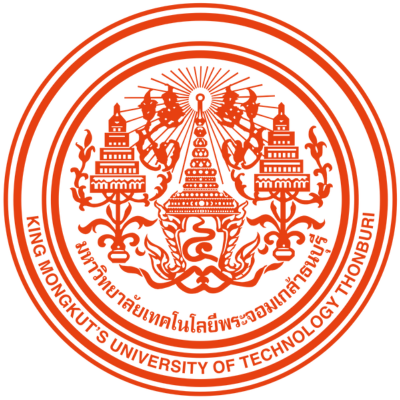
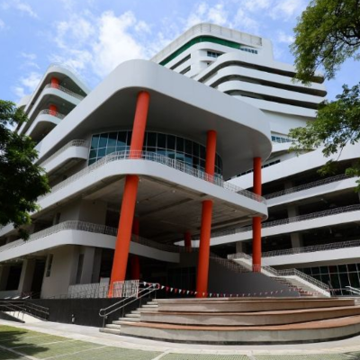
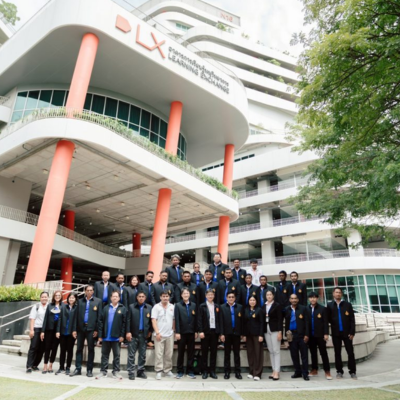

KMUTT



King Mongkut’s University of Technology Thonburi (KMUTT), established in 1960 in Bangkok, is one of Thailand’s top public research universities specializing in science, engineering, and technology. Renowned for its emphasis on innovation, practical learning, and international collaboration, KMUTT nurtures students to become problem-solvers and leaders in advancing sustainable development. With strong programs in engineering, architecture, energy, environment, and information technology, the university is recognized for producing graduates who are highly skilled, globally competitive, and committed to applying knowledge for the benefit of society.